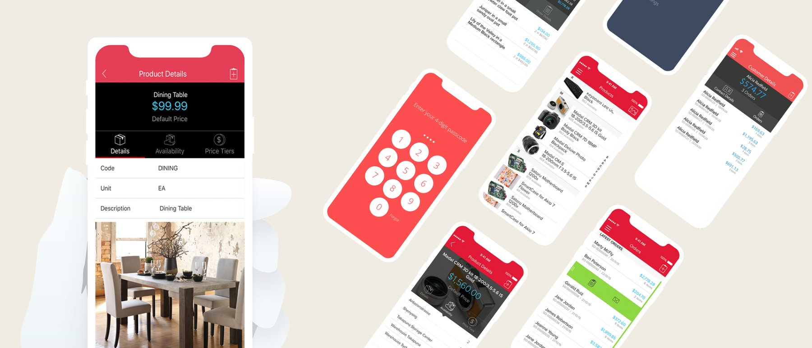

Context & challenge
Inventory and operational users needed a way to check on things away from a desk, and the existing mobile app didn't clearly serve that need.
Role & contribution
Jorge (Senior Creative Designer) and Junior (Principal Designer) owned UX and visual design, including the app's look and feel. Development was outsourced to an external, China-based development partner; the design team directed the build rather than writing it.
Design rationale
Renamed from "Research & insights" — no formal research sessions are confirmed for this project.
Mobile use in an operational, warehouse-type context tends toward quick checks rather than sustained work, which argued for a small set of high-frequency tasks done well rather than porting the full desktop feature set across.
Goals & strategic objectives
- Enable high-frequency operational tasks on mobile
- Reduce friction in mobile interactions
- Improve perceived speed
Design strategy & approach
Contextual prioritisation over feature parity: streamlined task flows, simplified navigation, clear touch affordances.
Solution
Directed the mobile UI redesign and partnered with the outsourced development team to get the design built as intended: fewer steps in key actions, improved search and quick-access patterns.

Status
Shipped. No outcome metrics available.
Reflection & learnings
Mobile isn't a smaller desktop — it's a different intent space.
This project sharpened how the team defines feature priority: by context rather than parity. Future potential is offline-first capability for warehouse environments, where connectivity is the real constraint.